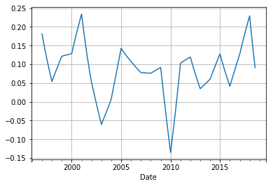
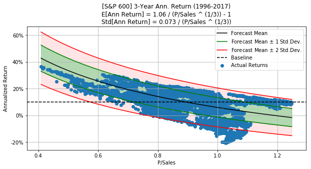

plot_ann_returns(years=8, years_range=2,
ticker=ticker_SP500, df=df_SP500)
Forecast Baseline p-value
=================================================
MAE: 2.0% 5.1% 0.00e+00
R^2: 0.83
We compared the historical returns of different stock indices for the United States in a. Using the mathematical model from , this paper will forecast future returns based on e.g. the P/Sales or P/Book ratios. Based on their current P/S ratios, we can compare the forecasted returns for the major U.S. stock indices. S&P 500 (large-cap), S&P 400 (mid-cap), S&P 600 (small-cap), and NASDAQ 100 (mainly technology) will be studied. This paper will summarize the main ideas again so it can hopefully be read on its own. The previous papers provide detailed explanations of the mathematics.
Python version 2.7 is used to implement this Jupyter Notebook. For numerical computations and plotting, it requires various packages. README-file contains installation instructions.
%matplotlib inlineThis code enables Jupyter Notebook, an interactive coding environment, to display plots within the notebook rather than in a separate window. It is a "magic command" that instructs the notebook to render plots directly below the code cell. It allows data scientists and programmers to visualize and analyze their data without switching between different windows. When working with large datasets or comparing multiple plots, this feature is especially useful.
# Imports from Python packages.
import matplotlib.pyplot as plt
from matplotlib.ticker import FuncFormatter
from scipy.stats import ttest_rel, ttest_ind
import pandas as pd
import numpy as np
import osThe script begins by importing several Python packages. The
matplotlib.pyplot package provides a way to create plots
and graphs, the matplotlib.ticker.FuncFormatter package
allows for the formatting of tick marks on plots, the
scipy.stats package provides statistical functions, the
pandas package is used to work with data frames, and the
numpy package provides mathematical functions. In order to
save the plots generated, the code sets up a folder path using the OS
package. A data analysis is then performed by the code. The data to be
analyzed has already been loaded into a pandas data frame. Specifically,
paired samples will be analyzed using the t-test, and independent
samples will be analyzed using the t-test. In order to visualize the
results of the analysis, plots can be generated after the analysis has
been completed. This is accomplished with the matplotlib.pyplot package.
Different types of plots can be created with the plt object, such as
line plots, scatter plots, and bar plots. Plotting data is accepted as
an argument by these methods. As a final step, the code saves the plots
in a specified folder path using the OS package. For further analysis or
reporting, the plots can be easily accessed.
# Imports from FinanceOps.
from data_keys import *
from data import load_index_data, load_stock_data
from returns import reinvestment_growth, prepare_ann_returns, prepare_mean_ann_returnsVarious functions and datasets are imported from modules "FinanceOps", "data_keys", "data", and "returns". Financial operations and financial data are contained in these modules. This code calls specific functions from these modules after importing the necessary functions and datasets. In order to load index data, the function "load_index_data" is called. To load stock data, the function "load_stock_data" is called. Most likely, these functions retrieve data from a database or other designated source. Afterwards, the code calls the "returns" module's function "reinvestment_growth". Taking reinvestment of returns into account, this function calculates the growth of an investment. Reinvestment growth may be calculated using a formula or algorithm. Afterwards, the code invokes the functions "prepare_ann_returns" and "prepare_mean_ann_returns" from the "returns" module. It is likely that these functions prepare and format annual returns and mean annual returns for further analysis or display. The code imports functions and data related to finance operations, and then uses them to retrieve and manipulate financial data. Functions and datasets imported from different modules determine the specific operations performed.
The financial data we will be using has now been loaded.
# Define the ticker-names for the stock-indices we consider.
ticker_SP500 = "S&P 500"
ticker_SP400 = "S&P 400"
ticker_SP600 = "S&P 600"Three variables are defined in this code: ticker_SP500, ticker_SP400, and ticker_SP600. The variables represent the ticker names of different stock indices. "S&P 500", "S&P 400", and "S&P 600" are the ticker names. Later in the code, these ticker names can be used to reference specific stock indices.
# Load the financial data for the stock-indices.
df_SP500 = load_index_data(ticker=ticker_SP500)
df_SP400 = load_index_data(ticker=ticker_SP400, book_value=False)
df_SP600 = load_index_data(ticker=ticker_SP600, book_value=False)Three different stock indices are loaded in this code: the S&P 500, the S&P 400, and the S&P 600. Each index's data is stored in a separate data frame, df_SP500, df_SP400, and df_SP600. Each index's ticker symbol is passed to the load_index_data function. This function is called with the ticker symbol stored in the variable ticker_SP500 for the S&P 500. With respect to the S&P 400 and S&P 600, the function is called with the ticker symbols stored in the variables ticker_SP400 and ticker_SP600. The book_value parameter for the S&P 400 and S&P 600 is set to False, indicating that the data being loaded for these indices does not include book value information.
In particular, I was unable to access the original fundamental data for the NASDAQ index. I also retrieved data for the Exchange Traded Fund (ETF) with the ticker symbol QQQ, which mirrors the performance of the NASDAQ index. Morningstar Direct provided this data. Rather than Sales Per Share data, the database only provided P/Sales data. To overcome this limitation, I estimated the Sales Per Share using the following formula: Divide the Share Price at time-step "t" by the corresponding P/Sales ratio at time-step "t".
# Load NASDAQ data for the ETF with ticker QQQ.
ticker_QQQ = "QQQ"
df_QQQ = load_stock_data(ticker=ticker_QQQ, earnings=False, book_value=False)
# Estimate Dividend Yield from diff. btw. Total Return and Share-Price.
df_QQQ[DIVIDEND_YIELD] = reinvestment_growth(df_QQQ, smooth=True)The code below loads NASDAQ data for an ETF (Exchange-Traded Fund) with the ticker symbol QQQ. The code assigns the ticker symbol "QQQ" to the variable ticker_QQQ. Next, it calls load_stock_data with the argument ticker set to ticker_QQQ, and earnings and book_value set to false. The function loads stock data from the NASDAQ dataset for the specified ticker and returns it as a DataFrame. DataFrame df_QQQ is then assigned to the returned DataFrame. To estimate the dividend yield for each entry in the df_QQQ DataFrame, the code uses the reinvestment_growth function. Dividend yield is calculated by subtracting total return from share price. Dividend yield values are added to the df_QQQ DataFrame as a column named DIVIDEND_YIELD. If smooth is set to True in the reinvestment_growth function, then the dividend yield data might be further processed or smoothed.
Let's explain the formulas and concepts in plain English: Total Return is the product of shares, which can increase due to dividend reinvestment (ignoring taxes), and share price. As the inverse of the investment period in years, the annualized return between the starting date "t" and the end date "t+Years" is calculated as the ratio of the Total Return at the starting date to the Total Return at the end date. The annualized return is obtained by subtracting 1 from this result. Given the P/Sales ratio at time step "t," we have derived two formulas to estimate the mean and standard deviation of the annualized return.
The estimated mean annualized return is obtained by dividing a parameter called "a" by the P/Sales ratio raised to the power of the inverse of the investment period in years. This result is subtracted by 1. Divide the P/Sales ratio raised to the power of the inverse of the investment period in years by the estimated standard deviation of the annualized return. There are three factors that can be used to estimate the parameters "a" and "b": (1) dividend reinvestment growth, (2) growth in Sales Per Share, and (3) changes in P/S valuation ratios. For "a," multiply the expected dividend yield plus 1, the expected sales per share growth plus 1, and the expected P/S ratio raised to the power of the inverse of the investment period in years. "B" is estimated by calculating the standard deviation of the expression: dividend yield plus 1 multiplied by sales per share growth plus 1 multiplied by the P/Sales ratio raised to the power of the inverse of the investment period. Dividend yield, sales growth, and P/S ratios can be forecasted in order to predict future stock returns. For these factors, historical values can be used, or alternative values can be used if the future looks different.
The forecasting model is implemented in this class.
class ForecastModel:
"""
Mathematical model used to forecast long-term stock returns.
"""
def __init__(self, dividend_yield, sales_growth,
psales, years):
"""
Create a new model and fit it with the given data.
:param dividend_yield: Array with dividend yields.
:param sales_growth: Array with one-year sales growth.
:param psales: Array with P/Sales ratios.
:param years: Number of years.
"""
# Copy args to self.
# Note the +1 for dividend yield and sales-growth
# so we don't have to do it several times below.
self.dividend_yield = np.array(dividend_yield) + 1
self.sales_growth = np.array(sales_growth) + 1
self.psales = psales
self.years = years
# Calculate the `a` parameter for the mean ann.return.
self.a = self.mean_parameter()
# Calculate the `b` parameter for the std.dev. ann.return.
self.b = self.std_parameter()
def forecast(self, psales_t):
"""
Use the fitted model to forecast the mean and std.dev.
for the future stock returns.
:param psales_t: Array with different P/Sales ratios at buy-time.
:return: Two arrays with mean and std.ann. for the ann. returns
for each of the psales_t values.
"""
# Annualized psales_t which is used in both formulas.
psales_t_ann = psales_t ** (1/self.years)
# Forecast the mean and std.dev. for the ann. returns
# for the different choices of P/Sales ratios at the
# time of buying the stock.
mean = self.a / psales_t_ann - 1.0
std = self.b / psales_t_ann
return mean, std
def mean_parameter(self):
"""
Estimate the parameter `a` used in the formula for the
mean annualized return, given arrays with distributions
for the dividend yield, sales-growth and P/Sales.
:return: The parameter `a` for the mean return formula.
"""
# We assume dividend_yield and sales_growth is already +1.
a = np.mean(self.dividend_yield) \
* np.mean(self.sales_growth) \
* np.mean(self.psales ** (1/self.years))
return a
def std_parameter(self, num_samples=10000):
"""
Estimate the parameter `b` used in the formula for the
std.dev. annualized return, given arrays with distributions
for the dividend yield, sales-growth and P/Sales.
This is estimated using Monte Carlo simulation / resampling
of the given data, which is assumed to be independent of
each other and over time.
:param num_samples: Number of Monte Carlo samples.
:return: The parameter `b` for the std.dev. return formula.
"""
# We will do a Monte Carlo simulation / resampling
# from the supplied arrays of data. For each year
# we take e.g. 10k random samples and then we
# calculate the annualized growth-rates. This gives
# us different values for dividend yields and sales-growth
# for each year, instead of just taking one random
# number and using that for all the years.
# Shape of arrays to sample.
shape = (num_samples, self.years)
num_samples_total = np.prod(shape)
# Sample the dividend yield. We assume it is already +1.
dividend_yield_sample = np.random.choice(self.dividend_yield, size=shape)
# Compound the growth through the years.
dividend_yield_sample = np.prod(dividend_yield_sample, axis=1)
# Sample the sales-growth. We assume it is already +1.
sales_growth_sample = np.random.choice(self.sales_growth, size=shape)
# Compound the growth through the years.
sales_growth_sample = np.prod(sales_growth_sample, axis=1)
# Sample the P/Sales ratio at the time of selling.
psales_sample = np.random.choice(self.psales, size=num_samples)
# Combine the three samples.
combined_sample = dividend_yield_sample * sales_growth_sample * psales_sample
# Calculate the `b` parameter.
b = np.std(combined_sample ** (1/self.years))
return b
def _ttest(self, err_forecast, err_baseline):
"""
Perform a t-test on the residual errors of the
forecasting model and the baseline to assess whether
their means are equal.
When the resulting p_value is close to zero, the means
are unlikely to be equal.
:param err_forecast:
Residual errors for the forecasting model.
:param err_baseline:
Residual errors for the baseline.
:return:
p_value
"""
if True:
# Paired t-test.
t_value, p_value = ttest_rel(a=err_forecast, b=err_baseline)
else:
# Un-paired / independent t-test.
t_value, p_value = ttest_ind(a=err_forecast, b=err_baseline, equal_var=False)
return p_value
def MAE(self, psales_t, ann_rets):
"""
Calculates the Mean Absolute Error (MAE) between the
model's forecasted mean and the observed annualized returns.
Also calculates the MAE between the baseline and the
observed annualized returns.
Also calculates the p-value that the forecasted and
baseline MAE values are equal.
:param psales_t:
Array with different P/Sales ratios at buy-time.
:param ann_rets:
Array with the corresponding annualized returns.
:return:
mae_forecast: MAE between model's forecast and actual returns.
mae_baseline: MAE between baseline and actual returns.
p_value: p-value whether the two MAE values are equal.
"""
# Forecast the mean and std.dev. for the stock returns,
# from the historical P/Sales ratios.
mean_forecast, std_forecast = self.forecast(psales_t=psales_t)
# Errors between observed data and forecasting model.
err_forecast = np.abs(ann_rets - mean_forecast)
# Baseline errors between observed data and its mean.
err_baseline = np.abs(ann_rets - np.mean(ann_rets))
# Mean Absolute Errors (MAE).
mae_forecast = np.mean(err_forecast)
mae_baseline = np.mean(err_baseline)
# Hypothesis test whether the two MAE values are equal.
p_value = self._ttest(err_forecast=err_forecast,
err_baseline=err_baseline)
return mae_forecast, mae_baseline, p_value
def R_squared(self, psales_t, ann_rets):
"""
Calculate the Coefficient of Determination R^2 for
measuring the Goodness of Fit between the forecasted
mean and the observed annualized returns.
An R^2 value of one means there is a perfect fit and
the forecasting model explains all of the variance
in the data. An R^2 value of zero means the forecasting
model does not explain any of the variance in the data.
Note that because the forecasting model is non-linear,
the R^2 can become negative if the model fits poorly
on data with a large variance.
:param psales_t:
Array with different P/Sales ratios at buy-time.
:param ann_rets:
Array with the corresponding annualized returns.
:return:
R^2 value.
"""
# Forecast the mean and std.dev. for the stock returns,
# from the historical P/Sales ratios.
mean_forecast, std_forecast = self.forecast(psales_t=psales_t)
# Errors between observed data and forecasting model.
err_forecast = (ann_rets - mean_forecast) ** 2
# Baseline errors between observed data and its mean.
err_baseline = (ann_rets - np.mean(ann_rets)) ** 2
# Sum of Squared Errors (SSE) for the forecasting model.
sse = np.sum(err_forecast)
# Sum of Squared Errors (SST) for the baseline.
sst = np.sum(err_baseline)
# The R^2 value.
R_squared = 1.0 - sse / sst
return R_squaredBased on various parameters, this code defines a class called
"ForecastModel" to forecast long-term stock returns. Models are
initialized with given data using the init method.
Dividend yields, sales growth, P/S ratios, and the number of years are
inputs. In turn, these parameters are stored as attributes of the
ForecastModel object. When the stock is bought, the
forecast method predicts the mean and standard deviation of annualized
returns for different P/Sales ratios. Calculates annualized P/S ratios
based on an array of P/S ratios. Forecasting the mean and standard
deviation is then done using these ratios as well as the a and b
parameters calculated in the init method. A mean
parameter is estimated using the "mean_parameter" method. Dividend
yields, sales growth, and P/Sales ratios are inputs, and it calculates
the mean of each. Then the P/Sales ratios are raised to the power of
1/years to calculate the a parameter. The
std_parameter method is used to estimate the parameter
b in the formula for standard deviation. A Monte Carlo
simulation is used to resample the data and calculate the standard
deviation. It takes an optional parameter num_samples to
specify the number of Monte Carlo samples to use. Using dividend yields,
sales growth, and P/Sales ratios, it calculates the b
parameter. A t-test is performed on the residual errors of the
forecasting model and a baseline to see if their means are similar. It
uses the ttest_rel function from the
scipy.stats module to calculate the t-value and p-value. In
this method, we calculate the Mean Absolute Error (MAE) between the
model's forecasted mean and the observed annualized return. In addition,
it calculates the MAE between a baseline and observed returns, as well
as the p-value for whether the two MAE values are equal. Using the
forecast method, it forecasts the mean and standard deviation of
returns, and then calculates the errors between the observations and the
forecasts. R_squared calculates the Coefficient of Determination (R^2)
for measuring the Goodness of Fit between the forecasted mean and the
observed annualized returns. For the forecasting model and the baseline,
the sum of squared errors (SSE) is calculated using the same approach as
the MAE method. After calculating these values, it calculates the R^2
value.
A forecasting model's statistics are printed by this helper-function.
def print_statistics(model, psales_t, ann_rets):
"""
Calculate and print the Goodness of Fit statistics
for a model's forecast compared to the baseline.
The p-value results from a paired t-test whether
the values are equal. A p-value close to zero means
that the values are unlikely to be equal.
:param model:
Instance of the ForecastModel class.
:param psales_t:
Array with different P/Sales ratios at buy-time.
:param ann_rets:
Array with the corresponding annualized returns.
"""
# Print header.
print("\tForecast\tBaseline\tp-value")
print("=================================================")
# Mean Absolute Error (MAE).
mae_forecast, mae_baseline, p_value = model.MAE(psales_t=psales_t,
ann_rets=ann_rets)
msg = "MAE:\t{0:.1%}\t\t{1:.1%}\t\t{2:.2e}"
msg = msg.format(mae_forecast, mae_baseline, p_value)
print(msg)
# R^2.
R_squared = model.R_squared(psales_t=psales_t,
ann_rets=ann_rets)
msg = "R^2:\t{0:.2f}"
msg = msg.format(R_squared)
print(msg)A function called "print_statistics" calculates and prints Goodness of Fit statistics for a forecast model compared to a baseline. There are three parameters: "model", which is an instance of the ForecastModel class, "psales_t", which is an array of different P/Sales ratios at purchase time, and "ann_rets", which is an array of annualized returns. In the function, a header indicates the forecast, baseline, and p-value columns. By using the model's MAE method, it calculates the Mean Absolute Error (MAE) for both the forecast and the baseline. "mae_forecast", "mae_baseline", and "p_value" contain MAE values and p-values. Next, the code formats a message string with placeholders for MAE values and p-values. For both forecasts and baselines, the formatted message displays the MAE values and p-values. The code then calculates the R^2 (R-squared) value using the model's R_squared method. This is the value assigned to the variable "R_squared". Another message string is formatted with a placeholder for the R^2 value, and this message is then printed to display the R^2 value. To summarize, this code calculates and prints the Goodness of Fit statistics for a forecast model compared to a baseline.
This function plots historical annualized returns and overlays them with the forecasting model's mean and standard deviation.
def plot_ann_returns(ticker, df, years, years_range=0,
dividend_yield=None, sales_growth=None,
psales=None,
psales_min=None, psales_max=None):
"""
Create a plot with the actual historical returns showing
the P/Sales ratios vs. future Annualized Returns. Overlay
this plot with the estimated mean and std.dev. from the
mathematical forecasting model we have derived above.
The optional params are taken from the DataFrame `df`
if not supplied. This allows you to override some or
all of the data used in the forecasting model e.g.
to change assumptions about future sales-growth.
:param ticker: String with ticker for the stock or index.
:param df: Pandas DataFrame.
:param years: Number of investment years.
:param years_range:
If > 0 then plot the mean ann. returns between
years - years_range and years + years_range.
:param dividend_yield: (Optional) Array with dividend yields.
:param sales_growth: (Optional) Array with one-year sales growth.
:param psales: (Optional) Array with P/Sales ratios.
:param psales_min: (Optional) Min P/Sales for plotting curves.
:param psales_max: (Optional) Max P/Sales for plotting curves.
:return: None.
"""
# Create a single plot.
fig = plt.figure(figsize=(10, 10))
ax = fig.add_subplot(211)
# Select only the data we need.
df2 = df[[TOTAL_RETURN, DIVIDEND_YIELD, SALES_GROWTH, PSALES]]
# Remove rows for which there is missing data.
df2 = df2.dropna()
# Part of the title for the data's date-range.
start_date, end_date = df2.index[[0, -1]]
title_dates = "({0}-{1})".format(start_date.year, end_date.year)
# Get Dividend Yield if none provided.
if dividend_yield is None:
dividend_yield = df2[DIVIDEND_YIELD]
# Get Sales Growth if none provided.
if sales_growth is None:
sales_growth = df2[SALES_GROWTH]
# Get P/Sales if none provided.
if psales is None:
psales = df2[PSALES]
# Get min P/Sales for plotting if none provided.
if psales_min is None:
psales_min = np.min(psales)
# Get max P/Sales for plotting if none provided.
if psales_max is None:
psales_max = np.max(psales)
# Create the forecasting model and fit it to the data.
model = ForecastModel(dividend_yield=dividend_yield,
sales_growth=sales_growth,
psales=psales, years=years)
# Evenly spaced P/Sales ratios between historic min and max.
psales_t = np.linspace(start=psales_min, stop=psales_max, num=100)
# Use the model to forecast the mean and std ann.returns.
mean, std = model.forecast(psales_t=psales_t)
# Plot the mean ann.return.
ax.plot(psales_t, mean, color="black", label="Forecast Mean")
# Plot one standard deviation.
color = "green"
alpha = 0.3
# Plot lines below and above mean.
ax.plot(psales_t, mean-std, color=color,
label="Forecast Mean $\pm$ 1 Std.Dev.")
ax.plot(psales_t, mean+std, color=color)
# Fill the areas.
ax.fill_between(psales_t, mean+std, mean-std,
color=color, edgecolor=color, alpha=alpha)
# Plot two standard deviations.
color = "red"
alpha = 0.1
# Plot lines below and above mean.
ax.plot(psales_t, mean-2*std, color=color,
label="Forecast Mean $\pm$ 2 Std.Dev.")
ax.plot(psales_t, mean+2*std, color=color)
# Fill the areas.
ax.fill_between(psales_t, mean-std, mean-2*std,
color=color, edgecolor=color, alpha=alpha)
ax.fill_between(psales_t, mean+std, mean+2*std,
color=color, edgecolor=color, alpha=alpha)
# Get the actual ann. returns from the historic data.
if years_range > 0:
# Use the mean. ann. returns between [min_years, max_years].
min_years = years - years_range
if min_years < 1:
min_years = 1
max_years = years + years_range
# Get the mean ann.returns from the historic data.
x, y = prepare_mean_ann_returns(df=df2,
min_years=min_years,
max_years=max_years,
key=PSALES)
# First part of the plot-title.
title1 = "[{0}] {1}-{2} Year Mean Ann. Return {3}".format(ticker, min_years, max_years, title_dates)
# Label for the scatter-plot of actual returns.
label_returns = "Actual Returns (Mean)"
else:
# Get the ann.returns from the historic data.
x, y = prepare_ann_returns(df=df2, years=years, key=PSALES)
# First part of the plot-title.
title1 = "[{0}] {1}-Year Ann. Return {2}".format(ticker, years, title_dates)
# Label for the scatter-plot of actual returns.
label_returns = "Actual Returns"
# Scatter-plot with the actual P/Sales vs. Ann.Returns.
ax.scatter(x, y, label=label_returns)
# Plot baseline mean as horizontal dashed line.
ax.axhline(y=np.mean(y), color="black", linestyle="--",
label="Baseline")
# Show the labels for what we have just plotted.
ax.legend()
# Create plot-title.
# Second part of the title. Formula for mean ann. return.
msg = "E[Ann Return] = {0:.2f} / (P/Sales ^ (1/{1})) - 1"
title2 = msg.format(model.a, years)
# Third part of the title. Formula for std.dev. ann. return.
msg = "Std[Ann Return] = {0:.3f} / (P/Sales ^ (1/{1}))"
title3 = msg.format(model.b, years)
# Combine and set the plot-title.
title = "\n".join([title1, title2, title3])
ax.set_title(title)
# Convert y-ticks to percentages.
formatter = FuncFormatter(lambda y, _: '{:.0%}'.format(y))
ax.yaxis.set_major_formatter(formatter)
# Set axes labels.
ax.set_xlabel("P/Sales")
ax.set_ylabel("Annualized Return")
# Show grid.
ax.grid()
# Show the plot.
plt.show()
# Print the Goodness of Fit statistics.
print_statistics(model=model, psales_t=x, ann_rets=y)The code plots a stock's or index's actual historical returns. P/Sales ratios are compared with future annualized returns. Overlaid on the plot is an estimation of the mean and standard deviation derived from a mathematical forecasting model. First, the code sets up the plot and selects the data from a DataFrame. Rows with missing data are removed. Following that, it checks if optional parameters such as dividend yield, sales growth, and P/S ratios are provided, along with their minimum and maximum values. It retrieves them from the DataFrame if they are not present. After that, the code creates a forecasting model and fits it to the data. P/Sales ratios are generated between the historic minimum and maximum. Based on the P/S ratio, the forecasting model forecasts the mean and standard deviation annualized returns. The plot shows the mean annualized return and standard deviation, along with two sets of lines below and above the mean. The code retrieves the mean annualized returns from historic data within a specified range of years if years_range is greater than zero. Along with the actual P/S ratio, these are plotted as scatter points. In addition, the code plots a horizontal dashed line to represent the baseline mean. In the code, the plot title is set, the y-axis ticks are converted to percentages, the axes are labeled, the grid is displayed, and the plot is displayed. The code prints the Goodness of Fit statistics for the forecasting model.
To plot a comparison between Share-Price and Total Return, use this helper function.
def plot_price_total_return(df):
"""
Plot Share-Price and Total Return normalized to start at 1.
"""
df2 = df[[TOTAL_RETURN, SHARE_PRICE]].dropna()
df2 /= df2.values[0]
df2.plot(grid=True)The code defines a function called "plot_price_total_return", which takes a dataframe as input. Using this function, you can plot the share price and total return of a particular stock or investment, with both values standardized to 1. From the input dataframe, the function creates a new dataframe called "df2" by selecting only the columns related to total return and share price. In the new dataframe, any rows with missing values in these columns are removed. To normalize the values in the "df2" dataframe, they are divided by the value of the first row. The share price and total return values will start at 1 as a result. Lastly, the function plots the normalized values from the "df2" dataframe, with a grid displayed. Plotting the share price and total return over time, with both values starting at 1 for easy comparison, will result in the following plot.
S&P 500 is an index of 500 of the largest companies in the United States. Due to its size, the S&P 500 is a good gauge of the entire U.S. stock market (see ).
From 1989 to 2017, the following plot compares the share price of the S&P 500 with its Total Return. By reinvesting dividends back into the S&P 500 and ignoring taxes, the Total Return is calculated.
plot_price_total_return(df=df_SP500["1989":])Plot_price_total_return(df=df_SP500["1989":]) performs a specific
operation on a DataFrame df_SP500. A subset of the data is selected by
using the slice notation ["1989":]. Until the end of the
DataFrame, this selects all rows starting with 1989. Afterward, it
performs a specific calculation or analysis on the selected subset.
Total return is the basis for this calculation. Based on the selected
subset of data, the code produces a plot or graph showing the total
return. In the code snippet, the plot or graph does not provide specific
details, but it can be inferred that it visualizes the total return over
time.
Based on the above plots for S&P 500 Share-Price and Total Return, it is clearly only possible to determine whether a given value was high or low in hindsight. To determine whether the S&P 500 is priced cheaply or expensively, we will use the P/Sales ratio. In the next section, we will discuss how the P/Sales ratio has historically been correlated with future returns and how it fits with the forecasting model.
From 1989 to 2017, the P/Sales ratio varied roughly between 0.6 and 2.2, with a mean of 1.35.
df_SP500[PSALES].plot(grid=True)<matplotlib.axes._subplots.AxesSubplot at 0x7f8863226208>A DataFrame called "df_SP500" is plotted using this code. "PSALES" is the column being plotted. First, access the DataFrame "df_SP500" and extract the "PSALES" column. The data in this column probably pertains to a specific product or group of products. After obtaining the specific column, the code plots it. Data points from the "PSALES" column will be displayed on the y-axis, while the index values of the DataFrame will appear on the x-axis. In addition to the plot, there will also be a grid to help visually organize the data points. For analysis or presentation purposes, this code visualizes sales data from the "PSALES" column of the "df_SP500" DataFrame.
df_SP500[PSALES].describe()count 10591.000000
mean 1.355346
std 0.403827
min 0.590104
25% 1.009636
50% 1.378226
75% 1.618272
max 2.218035
Name: P/Sales, dtype: float64You provided code that operates on a dataframe called "df_SP500". A column called "PSALES" is extracted from the dataframe. This column is then described using the ".describe()" method. The ".describe()" method calculates and presents various statistical measures for the column. Among these measures are the number of non-missing values, the mean (average), the standard deviation, the minimum value, the 25th percentile (a measure of the data distribution), the median (50th percentile), and the 75th percentile. Using the ".describe()" method on the "PSALES" column within the "df_SP500" dataframe, the code provides statistical summary information. As a result of this summary, you can gain insight into the distribution and central tendency of the data in the "PSALES" column.
Forecasting models consider growth in sales per share as an important factor. Based on the following plot and statistics, the S&P 500 has had somewhat cyclical sales growth between 1989 and 2017, with the mean at 3.7% and the extremes at -16.5% and 12.6%. As the forecasting model assumes that the average sales growth is reasonably similar over longer time-periods of e.g. five to ten years, the somewhat cyclical and mean-reverting nature of the sales growth is important when fitting historical data to the forecasting model.
df_SP500[SALES_GROWTH].plot(grid=True)<matplotlib.axes._subplots.AxesSubplot at 0x7f8862f39e48>It retrieves a specific column called "SALES_GROWTH" from a DataFrame called "df_SP500". The "SALES_GROWTH" column is then visualized using the plot() function. A grid is displayed on the plot to help align the data points and simplify the visualization. In general, this code plots the sales growth data from the "df_SP500" DataFrame.
df_SP500[SALES_GROWTH].describe()count 10415.000000
mean 0.037141
std 0.053362
min -0.164586
25% 0.004295
50% 0.043822
75% 0.078067
max 0.125595
Name: Sales Growth, dtype: float64It performs descriptive statistics on a column
(SALES_GROWTH) in a dataframe (df_SP500). The
first step is to select the SALES_GROWTH column from the
df_SP500 dataframe. It probably contains information about
the growth rates of different companies or stocks in the S&P 500
index. After that, the describe() function is applied to
the SALES_GROWTH column. The function calculates various
summary statistics about the column's data. The most common statistics
are count (number of non-missing values), mean (average), standard
deviation, minimum, 25th percentile, median (50th percentile), 75th
percentile, and maximum. It can provide insight into the distribution
and characteristics of sales growth data for S&P 500 companies if
you run this code.
From 1989 to 2017, the following plot and statistics show the historical dividend yield for the S&P 500. Dividend yields ranged from 1% to 4% with a mean of 2.1%. It is important to use matching data periods for historical P/Sales ratios, sales growth, and dividend yields, which we only have for 1989 for the S&P 500.
df_SP500[DIVIDEND_YIELD]["1989":].plot(grid=True)<matplotlib.axes._subplots.AxesSubplot at 0x7f886325f6d8>Using the pandas library, this code plots a line graph. There is a specific column called "DIVIDEND_YIELD" in the dataset called "df_SP500". From 1989 onwards, the graph will display data. This data is visualized using the "plot" function. Gridlines are displayed in the graph with the "grid=True" parameter. In general, this code plots the dividend yield from the SP500 dataset starting in 1989.
df_SP500[DIVIDEND_YIELD]["1989":].describe()count 10772.000000
mean 0.021157
std 0.006215
min 0.010819
25% 0.017290
50% 0.019661
75% 0.024518
max 0.040702
Name: Dividend Yield, dtype: float64The code is referring to a dataframe called "df_SP500" and it is
performing some operations on a specific column called "DIVIDEND_YIELD."
The code begins by specifying a range of rows from 1989 to
present.
This filtered range of rows is then described using the "describe()"
function.
The "describe()" function calculates several statistical measures for
the "DIVIDEND_YIELD" column, including the count of values, mean,
standard deviation, minimum value, 25th percentile, median, 75th
percentile, and maximum value.
Using the "df_SP500" dataframe, the output will provide a summary of
these statistical measures for the "DIVIDEND_YIELD" column.
With the historical data for the S&P 500 between 1989 and 2017, we use the forecasting model. Blue dots indicate the actual one-year returns of the S&P 500. Black solid line represents forecasted mean return. There is one standard deviation around the mean in the green area, and two standard deviations around the mean in the red area. For comparison, the dashed black line represents the mean annualized return for the historical data.
plot_ann_returns(years=1, ticker=ticker_SP500, df=df_SP500) Forecast Baseline p-value
=================================================
MAE: 28.5% 12.2% 0.00e+00
R^2: -4.08
Plot_ann_returns(years=1, ticker=ticker_SP500, df=df_SP500) calls
plot_ann_returns with three arguments: years, ticker, and df. It is
being passed '1' for years, 'ticker_SP500' for ticker, and 'df_SP500' as
df for the df argument. Plotting annual returns for a specific stock or
financial asset is likely the purpose of plot_ann_returns. In the case
of 1 as the years argument, the function will
calculate and plot the annual returns for a one-year period. This
argument specifies the ticker symbol of the stock or asset, which in
this case is the S&P 500. This argument likely represents a
dataframe that contains the asset's required data. By using the ticker
symbol and dataframe provided, this code plots the annual returns for a
given asset over a specific period of time.
According to the statistics printed below the plot, the forecasting model fits the historical data much worse than the baseline model. Based on the Mean Absolute Error (MAE), the forecasting model has an average absolute error of 28.5% versus 12.2% for the baseline. Since the p-value is practically zero, this difference is not random. The forecasting model therefore fits the historical data much worse than the average return for 1-year investment periods of the S&P 500. Also note that the R2 is negative because the variance is high for the data and the non-linear forecasting model fits the data poorly. These statistical measures are explained in more detail in .
These plots were omitted since the forecasting model also fits the data worse than the average annualized return for 2 and 3 year periods. Graph showing the annualized return for all 4-year periods of the S&P 500, along with the forecasted mean and standard deviation.
plot_ann_returns(years=4, ticker=ticker_SP500, df=df_SP500) Forecast Baseline p-value
=================================================
MAE: 6.5% 8.5% 2.11e-164
R^2: 0.41
Using plot_ann_returns(years=4, ticker=ticker_SP500, df=df_SP500),
the code calls a function called plot_ann_returns with three arguments:
year, ticker, and df. The years argument indicates that the
function will calculate and plot the annual returns for a period of four
years. There is a ticker argument set to ticker_SP500, indicating that
the function will calculate S&P 500 annual returns. DataFrame
df_SP500, which presumably contains historical data for the S&P 500
index, is set as df_SP500. With these arguments, the function will
calculate the annual returns of the S&P 500 index over the last four
years using historical data from the DataFrame df_SP500. After that, the
annual returns will be plotted in some visual format, such as a line
graph or bar chart. Essentially, this code analyzes and visualizes the
annual returns of the S&P 500 index over time.
We would like to quantify exactly how much better the forecasting model fits than the baseline, which is shown in the above statistics. Forecasting model MAE is 6.5%, baseline MAE is 8.5%. On average, the forecasting model has a better fit with an absolute error of about 2 percentage points. It is extremely unlikely that this happened by chance since the p-value is practically zero. However, the R2 is only 0.41, which means that most variance in the data is still not explained by the forecasting model.
As you can see in this plot, the actual returns of the S&P 500 for all 10-year investment periods between 1989 and 2017 are almost all within one standard deviation of the forecasted mean, so the forecasting model fits quite well with the historical data. The R2 value is 0.75, which means that the forecasting model can explain a lot of variance in data.
plot_ann_returns(years=10, ticker=ticker_SP500, df=df_SP500) Forecast Baseline p-value
=================================================
MAE: 2.1% 3.5% 1.10e-277
R^2: 0.75
In the code above, the function call plot_ann_returns(years=10,
ticker=ticker_SP500, df=df_SP500) is called with three arguments:
years, ticker, and df. With a
value of 10, the function will calculate annual returns for a period of
10 years. The ticker argument is set to a variable called
ticker_SP500, which presumably contains the S&P 500
index ticker symbol. As a result, the function will calculate S&P
500 returns specifically. The df argument is set to a
variable called df_SP500, which is likely a dataframe or a
data structure holding historical index price data. The annual returns
will be calculated using this dataframe. Based on the provided
historical price data, it seems that the code generates a plot of the
annual returns for the S&P 500 index over a ten-year period.
Blue dots on the above plot show the actual 10-year returns for the S&P 500, but there are some irregularities. The S&P 500 could be at the peak of a bubble or at the bottom of a crash at the end of a 10-year period due to stock market bubbles and crashes. We can smooth out the effects of daily noise and stock-market bubbles and crashes by letting each blue dot represent an average annualized return for investment periods between 6 and 10 years. The following plot shows the original proposal in . There is a slightly better fit with R2=0.83.
plot_ann_returns(years=8, years_range=2,
ticker=ticker_SP500, df=df_SP500)
Forecast Baseline p-value
=================================================
MAE: 2.0% 5.1% 0.00e+00
R^2: 0.83
The code calls the function "plot_ann_returns" with four arguments: years, years_range, ticker, and df. "years" is set to 8, "years_range" to 2, "ticker" is set to a variable called "ticker_SP500", and "df" is set to a variable called "df_SP500". "plot_ann_returns" plots the annual returns of a specific stock or index based on these arguments. In this case, 8 years of data will be plotted using the "years" argument. Setting "years_range" to 2 would mean plotting the data from 2018 to 2020 if the data is available from 2010 to 2020. Probably the "ticker" and "df" arguments specify the plot's data source. The "Ticker" specifies the specific stock or market index to be plotted, in this case, "ticker_SP500". "df" represents the dataset containing data for the specified stock or index, in this case, "df_SP500". Overall, this code is calling a function to plot the annual returns of a specific stock or market index using a dataset containing the data for that stock or index, with the number of years of data and the range of years to be plotted.
For comparison with other stock indices, this plot shows the historical returns of the S&P 500 averaged over three to seven-year investment periods. There is a decent fit between the forecasting model and the historical data with R2=0.68.
plot_ann_returns(years=5, years_range=2,
ticker=ticker_SP500, df=df_SP500) Forecast Baseline p-value
=================================================
MAE: 3.8% 7.7% 0.00e+00
R^2: 0.68
A plot of annual returns for a specific number of years, in this case 5, is generated by the code above. Plotting returns requires four arguments: years, years_range, ticker, and df. In this case, the years argument specifies the number of years for which the returns should be plotted, which is 5. The years_range argument specifies the range of years to include in the plot, which is set to 2. Consequently, the plot will include returns for the most recent two years within the overall 5-year period. The ticker argument specifies the stock ticker symbol for which returns should be plotted, in this case, ticker_SP500. df is a dataframe containing historical stock price data for the specified ticker. df_SP500 is the name of this dataframe. The code will generate a plot showing the annual returns for the specified ticker over a 5-year period, focusing on the most recent two years. The graph shows how the stock has performed over time.
There are 400 mid-sized companies in USA that make up the S&P 400 index, with market capitalizations between USD 1.6-6.8 billion (see ).
In the following plot, the share price and total return for the S&P 400 are compared between 1995 and 2017.
plot_price_total_return(df=df_SP400["1995":])As an argument, "df" is passed to a function called "plot_price_total_return()". DataFrame "df" appears to be a subset of "df_SP400", including 1995 data. In the code snippet provided, there is no indication of the specific functionality of "plot_price_total_return()". According to the name of the function, it is likely that the function plots the total return of the prices in the DataFrame "df". It means that the function has already been defined somewhere else in the code since the code snippet is a function call. It is necessary to examine the definition of the "plot_price_total_return()" function to fully understand what the code does.
P/S ratios for the S&P 400 between 1995 and 2017 are shown in the following plot and statistics. P/Sales ratios ranged from 0.5 to 1.4 with a mean of 1.1.
df_SP400[PSALES].plot(grid=True)<matplotlib.axes._subplots.AxesSubplot at 0x7f8860f5ed68>Python code snippet df_SP400 performs a specific task on a pandas DataFrame object named df_SP400. Plot() is called with the argument PSALES, which indicates a specific column within the DataFrame that contains sales data. Line graphs are created using the code. By passing the argument grid=True, the plot() function adds a grid to the graph for easy visual reference. To visualize the sales trends, this code takes the PSALES column from the df_SP400 DataFrame and generates a line graph with a grid.
df_SP400[PSALES].describe()count 8037.000000
mean 1.103492
std 0.146182
min 0.508140
25% 1.020054
50% 1.123266
75% 1.201071
max 1.415186
Name: P/Sales, dtype: float64The code df_SP400[PSALES].describe() performs a specific
operation on the DataFrame df_SP400. In the first step, an
indexing operation called [PSALES] is used to select a specific column
or series from the DataFrame. Having selected the specific column, the
.describe() function is applied to it. The function
calculates summary statistics for the selected column of data. As a
result, the output will display the number of non-null values, the mean,
standard deviation, minimum and maximum values, as well as lower
quartile, median, and upper quartile values. As a result of this
information, we can better understand the distributions and
characteristics of the data in the PSALES column.
For the S&P 400, the annual growth in Sales Per Share has ranged from -28% to +10% with an average of 8.7%.
df_SP400[SALES_GROWTH].plot(grid=True)<matplotlib.axes._subplots.AxesSubplot at 0x7f8860dcdb38>DataFrame "df_SP400" is used to plot sales growth data. Here is a
step-by-step explanation of what the code does: The code plots
"df_SP400[SALES_GROWTH]". In the DataFrame, "SALES_GROWTH" refers to a
column that contains sales growth values.
To generate a plot, the .plot() function is called on the specified
data. Most likely, this function is part of a plotting library or
module.
Gridlines are included in the plot when the "grid=True" parameter is set
to true. The plotted data can be visually aligned and interpreted by
using gridlines. The code plots the sales growth data from the
"df_SP400" DataFrame. There will likely be a plot with sales growth
values on the y-axis and categorical or numerical labels on the x-axis.
Incorporating gridlines will make the plot easier to interpret and
analyze.
df_SP400[SALES_GROWTH].describe()count 7873.000000
mean 0.086952
std 0.066265
min -0.109900
25% 0.050749
50% 0.086885
75% 0.121823
max 0.280169
Name: Sales Growth, dtype: float64Your code performs a specific action on a DataFrame called df_SP400. It applies the describe() method to the column SALES_GROWTH within the DataFrame. Data in a column can be described using the describe() method. It includes the count, the mean (average), the standard deviation, the minimum and maximum values, as well as the first quartile, median (second quartile), and third quartile. The code generates and displays these descriptive statistics by applying the describe() method to the SALES_GROWTH column in the df_SP400 DataFrame. The SALES_GROWTH column of the DataFrame contains information about the distribution and characteristics of sales growth data.
Dividend yields for the S&P 400 between 1995 and 2018 ranged between 1% and 2.8% with a mean of 1.3%.
df_SP400[DIVIDEND_YIELD]["1995":].plot(grid=True)<matplotlib.axes._subplots.AxesSubplot at 0x7f8862b8e390>You provided code that performs a series of actions on the dataframe df_SP400. From the dataframe, it accesses a column named DIVIDEND_YIELD. The dataframe is then subset starting from 1995 until the end. All data prior to 1995 is filtered out. It then plots the filtered data as a line graph. It includes a grid to make it easier to read and interpret. In summary, this code visualizes the dividend yield over time, highlighting changes and trends in dividend yields since 1995.
df_SP400[DIVIDEND_YIELD]["1995":].describe()count 8582.000000
mean 0.013293
std 0.002787
min 0.009265
25% 0.011115
50% 0.013160
75% 0.014702
max 0.028419
Name: Dividend Yield, dtype: float64In this code, a variable called "df_SP400" is referenced and an operation is performed on it. "df_SP400" is likely a Pandas DataFrame object, which is a Python data structure for storing and analysing data. DataFrame data is being described using the "describe()" method. A column called "DIVIDEND_YIELD" is being described using the "describe()" method. It is likely that this column contains information about the dividend yield of certain stocks or assets. In the "DIVIDEND_YIELD" column, the square brackets ["1995":] specify a specific range of data. It is selecting data from 1995 onwards in this case. Overall, this code retrieves the descriptive statistics of dividend yield data from the "DIVIDEND_YIELD" column of the "df_SP400" DataFrame, specifically from 1995 onward. Descriptive statistics could include measures such as mean, median, standard deviation, minimum, and maximum dividend yields.
In the plot below, blue dots represent the actual historical 1-year returns of the S&P 400. This model's forecasted mean has a very poor fit to the historical data, as shown by the solid black line.
plot_ann_returns(years=1, ticker=ticker_SP400, df=df_SP400) Forecast Baseline p-value
=================================================
MAE: 14.6% 13.6% 1.19e-15
R^2: -0.12
The function plot_ann_returns(years=1, ticker=ticker_SP400,
df=df_SP400) plots the annual returns for a given stock ticker symbol
over a specified number of years. There are three parameters in the
function: 'years', 'ticker', and 'df'.
The first parameter specifies the number of years for which annual
returns will be calculated. This parameter represents the stock ticker
symbol for which the returns will be calculated. This parameter is a
DataFrame containing historical price data for the specified stock. With
the historical price data from the df DataFrame, plot_ann_returns()
calculates the annual returns for the specified stock ticker symbol. On
a graph, the x-axis represents the different years, and the y-axis
represents the corresponding annual returns. A plot is displayed,
allowing the user to visualize the annual returns for the specified
stock ticker symbol.
The following plot shows the historical 3-year returns of the S&P 400, which starts to fit the forecasting model, but R2=0.32 so most of the data's variance is still unexplained.
plot_ann_returns(years=3, ticker=ticker_SP400, df=df_SP400)
Forecast Baseline p-value
=================================================
MAE: 5.9% 6.8% 6.50e-83
R^2: 0.32
In your code, you are calling a function called "plot_ann_returns" with three arguments. "Years" is set to 3 in the first argument. Based on this, the function will calculate annual returns for a period of three years. In the second argument, "ticker", the value is "ticker_SP400". This argument probably represents the ticker symbol of a stock or index, possibly the S&P 400. "df_SP400" is set as the third argument. For calculating the annual returns, this argument is probably a DataFrame. According to the function name and arguments provided, the code plots annual returns for the given ticker (S&P 400 in this case) using the data from the DataFrame "df_SP400". A plot of the annual returns will provide a visual representation, allowing for easier analysis and interpretation.
Below is a plot showing the S&P 400's historical 5-year returns. With the exception of a cluster of outliers with P/Sales ratios around 1, this probably represents the 5-year period between 2004 and 2009, which ended with the financial crisis.
plot_ann_returns(years=5, ticker=ticker_SP400, df=df_SP400) Forecast Baseline p-value
=================================================
MAE: 2.9% 4.6% 0.00e+00
R^2: 0.56
It calls a function called plot_ann_returns with three arguments:
years, tickers, and df. This argument is set to 5, the ticker argument
is set to ticker_SP400, and the df argument is set to df_SP400. It is
likely used to plot the annual returns for a specific stock or financial
instrument. Passing the value '5' for the 'years' argument will plot the
annual returns for the past five years. The ticker argument
is probably a variable holding the ticker symbol of the financial
instrument or stock we want to plot. It could be something like "AAPL"
for Apple Inc. For Google, use "GOOGL". df is likely a variable that
holds a DataFrame or some other data structure that contains historical
price data for the stock. Calculating the annual returns requires this
data. With the specified arguments, it will generate a plot showing the
annual returns for the specified stock or financial instrument over the
last five years. Over time, this can be useful for analyzing stock or
instrument performance.
By considering the mean annualized return over three to seven years, we can smooth out the impact of stock market bubbles and crashes. As shown in the following plot, the forecasting model fits fairly well with R2=0.60.
plot_ann_returns(years=5, years_range=2,
ticker=ticker_SP400, df=df_SP400) Forecast Baseline p-value
=================================================
MAE: 2.7% 3.9% 1.92e-185
R^2: 0.60
A function called "plot_ann_returns" is being called with four arguments - "years", "years_range", "ticker", and "df". "years" is assigned a value of 5, "years_range" is assigned a value of 2, "ticker" is assigned a value of ticker_SP400, and "df" is assigned a value of df_SP400. This function plots a number of years' worth of annual returns. The "years" argument specifies the number of years for which the returns will be plotted. It is set to 5 in this case. The "years_range" argument determines how many years of returns will be displayed at a time on the plot. It is set to 2 in this case. "ticker" represents the ticker symbol for the dataset that will be plotted. It appears that ticker_SP400 represents the S&P 400 index ticker symbol in this case. As the value of df_SP400, the "df" argument represents the dataset itself. For calculating and plotting the annual returns, this dataset is likely to contain the necessary information. Overall, this code plots the annual returns for a specific number of years using a specific dataset and ticker symbol.
This plot shows the S&P 400 over 10-year investment periods, which does not fit well with the forecasting model. Further research is needed to determine the reason.
plot_ann_returns(years=10, ticker=ticker_SP400, df=df_SP400) Forecast Baseline p-value
=================================================
MAE: 2.0% 1.8% 1.05e-16
R^2: -0.26
It calls a function named "plot_ann_returns" with three arguments: "years", "ticker", and "df". Years is set to 10, ticker is a variable named "ticker_SP400", and df is a variable named "df_SP400". This function plots the annual returns of a specific stock or financial instrument over a specified period of time. The "years" argument specifies the duration of the analysis, while the "ticker" argument specifies the stock or instrument to analyze. "df" represents the data associated with the specified stock or instrument. For the specified number of years, the function will calculate the annual returns based on the supplied data. A graph or a plot will then be generated that shows the annual returns over time. Stocks and instruments can be analyzed in this way to determine their performance and volatility.
The S&P 600 index consists of 600 small-sized companies in the USA with market capitalizations between USD 0.5 and $5 billion (see ).
From 1995 to 2017, the following plot compares the share price and total return of the S&P 600.
plot_price_total_return(df=df_SP600["1995":])A DataFrame is passed into a function called "plot_price_total_return". By indexing another DataFrame called df_SP600 with the string "1995", we get the DataFrame that only contains 1995 data. This function plots the total return of a stock or investment over time. The total return for each point in time is computed using the input DataFrame. The total return over the specified period is then visualized using a plot. According to the code, the total return should be plotted for the DataFrame starting in 1995. The intention is to observe the total return of a stock or investment starting from that year onward. This code plots the total return over time for a DataFrame containing historical price data, providing a visual representation of the performance of the investment.
P/S ratios for the S&P 600 between 1995 and 2017 are plotted in the following plot and statistics. P/Sales ranged from 0.4 to 1.25, with a mean of 0.9.
df_SP600[PSALES].plot(grid=True)<matplotlib.axes._subplots.AxesSubplot at 0x7f8862b73390>Your code plots a line graph. df_SP600[PSALES] is a dataset or dataframe containing sales data. This code plots the column labeled as "PSALES" from the dataset. A line graph is generated using the plot() function on this column. A line graph shows the PSALES values on the y-axis and the index or x-axis values of the dataset on the x-axis. This parameter adds a grid to the plot, making it easier to read and interpret the graph.
df_SP600[PSALES].describe()count 8037.000000
mean 0.918666
std 0.154023
min 0.409077
25% 0.809512
50% 0.920284
75% 1.034259
max 1.248116
Name: P/Sales, dtype: float64df_SP600[PSALES] selects a column called "PSALES" from the dataframe
named df_SP600. Once this column is selected, the
.describe() function is applied to it. The descriptors
calculated by the describe() function are various descriptive statistics
for the selected column. Among the information provided is count, which
indicates how many non-null values are in the column, mean, which
measures how much the column varies or disperses, standard deviation,
which measures how much variation is present in the column, minimum and
maximum values, as well as quartiles, which divide the data into four
equal parts. The code summarizes the statistical measures for the
"PSALES" column in the df_SP600 dataframe.
Here are the historical annual growth rates in Sales Per Share for the S&P 600, which ranged from -13% to +23%.
df_SP600[SALES_GROWTH].plot(grid=True)<matplotlib.axes._subplots.AxesSubplot at 0x7f886106f860>
Data from the column "SALES_GROWTH" in the dataframe "df_SP600" is plotted using this code. The code first selects the column "SALES_GROWTH" from the dataframe "df_SP600". A line graph is then created based on this data. On the y-axis, the graph will display the sales growth values from the "SALES_GROWTH" column, and on the x-axis, the dataframe index values. In addition to the "plot" function, there is also a "grid=True" parameter, which adds a grid to the graph for ease of reading. In general, this code visualizes the "SALES_GROWTH" column from the "df_SP600" dataframe.
df_SP600[SALES_GROWTH].describe()count 7873.000000
mean 0.082902
std 0.066896
min -0.134935
25% 0.054608
50% 0.087807
75% 0.121448
max 0.233809
Name: Sales Growth, dtype: float64In a DataFrame named df_SP600, this line of code generates a summary of descriptive statistics for a specific column, SALES_GROWTH. The first thing it does is access the SALES_GROWTH column within the df_SP600 DataFrame. Following that, it calculates several summary statistics for this column, such as the count (number of non-null values), mean, standard deviation, minimum and maximum values, and percentiles (25th, 50th, 75th). A clear understanding of the distribution and characteristics of SALES_GROWTH can be gained from this information.
This plot shows the historical dividend yield for the S&P 600 between 1995 and 2018, which ranged from 0.6% to 2.5%.
df_SP600[DIVIDEND_YIELD]["1995":].plot(grid=True)<matplotlib.axes._subplots.AxesSubplot at 0x7f886095d7b8>This code plots a graph based on the data in the dataframe
df_SP600. Dividend yield is the specific data used for the
plot. From 1995 onwards, the plot will only include data. To make it
easier to read and interpret, the graph will have a grid.
df_SP600[DIVIDEND_YIELD]["1995":].describe()count 8582.000000
mean 0.010073
std 0.002635
min 0.006130
25% 0.008078
50% 0.009411
75% 0.011777
max 0.025011
Name: Dividend Yield, dtype: float64This code describes some statistical information about the SP600 DataFrame's dividend yield data. Here is a step-by-step explanation of what this code does: Get the dataframe "df_SP600". From the dataframe, retrieve the column "DIVIDEND_YIELD". Only include values starting in 1995 and onwards in the data. This filtered data can be described using the "describe()" function. "describe()" generates descriptive statistics that summarize the central tendency, dispersion, and shape of a dataset. This statistical information includes the count (number of values), mean (average), standard deviation, minimum value, 25th percentile, median (50th percentile), 75th percentile, and maximum value of dividend yield data from 1995 onwards. Summary: The code below provides statistical information about the dividend yield data of the SP600 DataFrame since 1995.
In the following plot, blue dots represent the actual historical 1-year returns of the S&P 600. Compared to historical returns, the model's forecasted mean has a very poor fit.
plot_ann_returns(years=1, ticker=ticker_SP600, df=df_SP600) Forecast Baseline p-value
=================================================
MAE: 17.9% 14.1% 1.01e-116
R^2: -0.46
Plot_ann_returns(years=1, ticker=ticker_SP600, df=df_SP600) calls
plot_ann_returns, which takes three parameters: years, ticker, and df.
If the year parameter is set to 1, the function calculates one-year
returns. In this case, ticker is being set to ticker_SP600, which is
likely a stock or financial index, such as the S&P 600 SmallCap
Index. The df parameter is set to df_SP600,
which probably represents a dataframe or dataset containing the required
data for calculating the returns. Using the provided data, this code
calculates and plots the annual returns for a specific stock or index.
Plot_ann_returns contains specific details about how the returns are
calculated and plotted, which is not shown in the code snippet.
Plotting the historical 3-year return of the S&P 600 starts to fit the forecasting model, but the Goodness of Fit for the model is relatively low at 0.24, leaving most of the variance unexplained.
plot_ann_returns(years=3, ticker=ticker_SP600, df=df_SP600)
Forecast Baseline p-value
=================================================
MAE: 6.6% 6.9% 1.06e-09
R^2: 0.24
The code
plot_ann_returns(years=3, ticker=ticker_SP600, df=df_SP600)
calls a function named plot_ann_returns. There are three
arguments to this function: years, ticker, and df. The
years argument is set to 3, which means the code requests
to plot the annual returns for 3 years. The ticker argument
is set to ticker_SP600, indicating that the code uses the
S&P 600 index ticker symbol. Financial markets use this ticker
symbol to refer to a specific stock or index. Using this argument, the
code presumably uses df_SP600, which contains historical stock data for
the S&P 600 index. By calling a function with the respective ticker
symbol and dataframe, this code plots the annual returns of the S&P
600 index for a specific period of three years.
Below is a plot of S&P 600 returns over the past five years. With the exception of a few outliers with P/Sales ratios around 0.95, it fits the forecasting model reasonably well. In the same way as the S&P 400, this was probably the period between 2004 and 2009, which culminated in a stock-market crash.
plot_ann_returns(years=5, ticker=ticker_SP600, df=df_SP600) Forecast Baseline p-value
=================================================
MAE: 3.4% 5.3% 0.00e+00
R^2: 0.57
Plot_ann_returns(years=5, ticker=ticker_SP600, df=df_SP600) calls
plot_ann_returns with three arguments: years, ticker, and df. The
years argument is set to five. In this example, the ticker
argument is set to a variable named ticker_SP600, and the df argument is
set to a variable named df_SP600. Using this code, you can plot the
annual returns of a specific stock or financial asset over time. The
variable years indicates how many years of data we would
like to plot. The ticker variable represents the specific
stock or financial asset we are interested in, and the df
variable represents the data frame which contains the historical returns
data. With the plot_ann_returns function, we can visualize the annual
returns of the chosen stock or asset over the specified number of years.
It is assumed that the plot_ann_returns function will generate the
appropriate plot using the given data despite the lack of details in the
code snippet.
By considering the mean annualized return for e.g. 3-7 year investment periods, we can smooth out the effect of stock-market bubbles and crashes. Based on the following plot, the forecasting model fits fairly well with R2=0.65.
plot_ann_returns(years=5, years_range=2,
ticker=ticker_SP600, df=df_SP600) Forecast Baseline p-value
=================================================
MAE: 2.8% 4.4% 3.68e-302
R^2: 0.65
Four parameters are passed to a function called plot_ann_returns.
With the first parameter set to 5, we will plot annual returns over a
five-year period. The second parameter, years_range,
indicates that each range of the x-axis represents a period of two
years. It is set to a variable called ticker_SP600, which probably
identifies a specific stock or index as the third parameter, ticker.
df_SP600 is set as the fourth parameter, which represents a DataFrame
containing data about stocks. A plot of annual returns over a specified
period of time is generated by the function plot_ann_returns in the
provided code snippet. From the code snippet alone, it is impossible to
determine how the plot is generated, what data is plotted, and how it
looks.
In the following plot, the S&P 600 for 10-year investment periods does not fit the forecasting model very well. It is unclear why this is happening and more research is needed.
plot_ann_returns(years=10, ticker=ticker_SP600, df=df_SP600) Forecast Baseline p-value
=================================================
MAE: 2.1% 1.5% 2.29e-105
R^2: -0.94
Your code calls a function called "plot_ann_returns" and passes three arguments: "years", "ticker", and "df". Over a specified number of years, this function plots the annual returns of a stock or financial instrument. With "years" set to 10, it plots annual returns over a period of 10 years. 'ticker' appears to be a variable or object representing a specific stock or financial instrument. This parameter is likely passed to the function to specify which stock or instrument's returns should be plotted. In the third argument, "df", the stock or instrument specified in "ticker" is also represented by a variable or object, presumably a DataFrame. There is likely to be information in this DataFrame, such as the date and corresponding returns. It calls a function to plot the annual returns for a specified stock or instrument over a specified period, using the data provided in a DataFrame.
On the NASDAQ exchange, the NASDAQ 100 index contains 100 of the largest non-financial stocks. Since we do not have data for the NASDAQ 100 index itself, we use data from an Exchange Traded Fund (ETF) with the ticker symbol QQQ to track it.
In the following plot, we compare share-price and total return for the S&P 600 between 2002 and 2019, the same period for which we have the other financial data.
plot_price_total_return(df=df_QQQ["2002":])Based on a given DataFrame called "df", the code you provided plots the total return of a particular financial instrument, specifically a stock or ETF. Here are the steps this code would undertake: Access the variable "df_QQQ", which contains historical price data. Using the indexing syntax ["2002":], we extract a subset of the DataFrame starting from 2002. The dataframe subset is then passed as an argument to plot_price_total_return(). Based on the provided data, the function calculates the total return of the financial instrument. Using this total return data, a visual representation of the instrument's performance is generated. Typically, the x-axis represents the time period and the y-axis represents the total return. This code generates a plot that visually displays the total return of a specified financial instrument beginning in 2002.
Here are the historical P/S ratios for the NASDAQ 100 between 2002 and 2019. With a mean of 2.9, the P/S ratio ranged from 1.4 to 4.1.
df_QQQ[PSALES].plot(grid=True)<matplotlib.axes._subplots.AxesSubplot at 0x7f8860639588>A graph is plotted using the pandas DataFrame df_QQQ and
the column PSALES. This column is plotted by calling the
plot() function. Gridlines can be added to the graph using the grid=True
parameter, which can assist with data interpretation. It visualizes the
data from the PSALES column in the df_QQQ
DataFrame.
df_QQQ[PSALES].describe()count 6179.000000
mean 2.858183
std 0.509177
min 1.387867
25% 2.465714
50% 2.915132
75% 3.135186
max 4.124833
Name: P/Sales, dtype: float64A DataFrame called "df_QQQ" contains a column called "PSALES". This line of code gets statistical information about that column. The first thing it will do is retrieve the column "PSALES" from the DataFrame "df_QQQ". Afterwards, it will calculate and provide several descriptive statistics for the "PSALES" column. The statistics include count, mean, standard deviation, minimum value, 25th percentile, median, 75th percentile, and maximum value. Understanding the distribution and range of values in the "PSALES" column provides insight into the data's central tendency and variability.
In the following plot and statistics, the historical annual growth in Sales Per Share for the NASDAQ 100 is shown, which has ranged from -2% to +33% with a mean of 11.4%.
df_QQQ[SALES_GROWTH].plot(grid=True)<matplotlib.axes._subplots.AxesSubplot at 0x7f886055e0f0>A data frame called 'df_QQQ' contains data stored in the 'SALES_GROWTH' column. To make it easier to read and interpret, the plot will have a grid. On the basis of the values stored in the 'SALES_GROWTH' column, the plot will likely show the trend or pattern of sales growth over time. For analysis or decision-making, the plot can help identify increases and decreases in sales growth.
df_QQQ[SALES_GROWTH].describe()count 5839.000000
mean 0.114218
std 0.074280
min -0.020979
25% 0.050689
50% 0.098598
75% 0.173477
max 0.334211
Name: Sales Growth, dtype: float64The code df_QQQ[SALES_GROWTH].describe() returns a statistical
summary of the Sales Growth column in the DataFrame df_QQQ. The first
step is to select the column "SALES_GROWTH" from the DataFrame
df_QQQ. The column contains information about a company's
or product's sales growth. It then applies the describe()
method to the selected column. In this method, various statistics are
calculated on the data in the column and a summary of these statistics
is returned. The summary includes basic statistics such as count, which
tells us the number of non-missing values in the column; mean, which
gives us the average value of the sales growth; standard deviation,
which measures the dispersion or variability of the sales growth values;
minimum and maximum values, representing the lowest and highest values
in the column; as well as quartiles, which divide the data into four
equal parts, providing us with a sense of how the data are distributed.
This code shows us the sales growth data in the "SALES_GROWTH" column in
the df_QQQ DataFrame.
Between 2002 and 2019, the historical dividend yield for the NASDAQ 100 ranged between 0.0% and 2.1% with a mean of 0.8%.
df_QQQ[DIVIDEND_YIELD]["2002":].plot(grid=True)<matplotlib.axes._subplots.AxesSubplot at 0x7f88603f6fd0>
In Python, the given code plots a graph based on a column in a DataFrame (df_QQQ). "DIVIDEND_YIELD" is the column used for plotting. The following is a step-by-step breakdown of what the code does: 1. In this code, the column "DIVIDEND_YIELD" is selected from the DataFrame df_QQQ. All values in that column are retrieved. The second. A filter is applied to the data based on the index label ["2002"] in this part of the code. From 2002 onward, all values are selected. The third point. Using the filtered data from the previous step, plot(grid=True) creates a plot. Line graphs are typically used for this plot, where the x-axis represents the index labels (dates or times) and the y-axis represents the values in the "DIVIDEND_YIELD" column. The fourth point. This code adds a grid to the plot, making it easier to read and interpret. Using the filtered data from the "DIVIDEND_YIELD" column of a DataFrame, the code creates a line graph with a grid.
df_QQQ[DIVIDEND_YIELD]["2002":].describe()count 6.293000e+03
mean 8.154579e-03
std 5.614934e-03
min -2.566770e-07
25% 3.239253e-03
50% 9.365185e-03
75% 1.214337e-02
max 2.051265e-02
Name: Dividend Yield, dtype: float64The code below describes and summarizes a column in a DataFrame called "df_QQQ." The column being analyzed is "DIVIDEND_YIELD." The first step is to select a subset of the DataFrame, specifically the data starting in 2002. We are selecting all rows from the year 2002 until the end of the DataFrame using the slice notation ["2002":]. This subset of data is then described using the "describe()" function. In the "describe()" function, you can see the count (number of non-missing values), the mean, the standard deviation, the minimum value, the 25th percentile (first quartile), the median (50th percentile), the 75th percentile (third quartile), and the maximum value for the selected column. We can get a concise summary of the distribution and central tendency of dividend yield data starting in 2002 by invoking the "describe()" function on the subset of data from the "DIVIDEND_YIELD" column.
Blue dots indicate the actual historical 1-year returns of the NASDAQ 100. A solid black line shows the model's forecasted mean, which is very poorly matched with historical data.
plot_ann_returns(years=1, ticker=ticker_QQQ, df=df_QQQ)
Forecast Baseline p-value
=================================================
MAE: 17.8% 13.0% 7.32e-196
R^2: -0.60
This code snippet, plot_ann_returns(years=1, ticker=ticker_QQQ,
df=df_QQQ), calls a function called plot_ann_returns and passes three
arguments: years, ticker, and df.
A value of 1 indicates that we want to calculate annual returns for a
year. The argument ticker is set to
ticker_QQQ, which likely corresponds to the stock symbol
for the QQQ index. In the above example, the argument represents a
dataframe containing historical price data for the QQQ index.
Plot_ann_returns performs several steps to analyze and visualize annual
returns for a specified stock or index. Based on its syntax, we might
assume that it will first filter the dataframe df to
include data for the desired number of years, in this case, 1 year. By
comparing the initial and final prices, it will calculate the annual
returns for the selected time period. A plot of the annual returns will
then be created by the function. The annual returns might be displayed
as a line graph or a bar graph, depending on the implementation. As the
x-axis represents the years under consideration, the y-axis represents
the corresponding returns. I believe this code snippet is part of a
larger program or script that analyzes and visualizes annual returns for
a specific stock or index over a specified period of time.
This plot shows the historical 3-year returns of the NASDAQ 100, which fits the forecasting model reasonably well with R2=0.41 for such short investment periods.
plot_ann_returns(years=3, ticker=ticker_QQQ, df=df_QQQ) Forecast Baseline p-value
=================================================
MAE: 5.2% 7.2% 9.71e-216
R^2: 0.41
Plot_ann_returns(years=3, ticker=ticker_QQQ, df=df_QQQ) plots the annual returns of a financial instrument, specifically the ticker symbol "QQQ", over a three-year period. For this code, the input parameters are 3 years, the ticker symbol for the instrument, which is "QQQ" in this case, and a DataFrame containing the required data points. With this information, the code will generate a plot that displays the annual returns for the specified instrument ("QQQ") over the specified period of time (three years) using the data provided in the DataFrame ("df_QQQ"). Plotting the performance of the instrument over time can be useful for analyzing its performance visually.
Here is a plot of the NASDAQ 100's historical 5-year returns. It is a fairly well fitted forecasting model, R2=0.69.
plot_ann_returns(years=5, ticker=ticker_QQQ, df=df_QQQ) Forecast Baseline p-value
=================================================
MAE: 3.4% 6.7% 0.00e+00
R^2: 0.69
Plot_ann_returns(years=5, ticker=ticker_QQQ, df=df_QQQ) calls a
function named plot_ann_returns and passes three arguments:
years with a value of 5, ticker with a value
of ticker_QQQ, and df with a value of
df_QQQ. Probably designed to plot the annual returns for a
particular stock or investment represented by the ticker symbol. It uses
the provided dataframe (df_QQQ) which presumably contains
historical data for the given stock. Calculations of the annual returns
are based on the specified number of years (in this case, 5). This code
would output a graphical representation, such as a line or bar chart,
showing the annual returns of the investment over the specified period
of time. On the plot, the x-axis represents years, and the y-axis
represents percentage returns. Visualizing the performance of the
investment over time can be useful for analyzing and understanding
it.
This plot shows the NASDAQ 100 for 10-year investment periods, which fits the forecasting model very well, with R2 = 0.82, explaining most of the data's variance.
plot_ann_returns(years=10, ticker=ticker_QQQ, df=df_QQQ) Forecast Baseline p-value
=================================================
MAE: 0.9% 1.8% 2.33e-141
R^2: 0.82
In the given code, plot_ann_returns is called with three parameters: years, ticker, and df. The purpose of this function is to plot the annual returns of a stock over a specified period. In order to plot the data, the function takes the value of the 'years' parameter. The 'ticker' parameter represents the symbol of the stock ticker. Stock data for a specific stock can be retrieved using this identifier. The function takes the value of the 'df' parameter, which represents the stock data to be plotted. Typically, this data is provided as a pandas DataFrame, containing historical stock prices. After the necessary parameters are provided, the function calculates the stock's annual returns based on the given number of years. First, it selects the closing prices from the stock data DataFrame. It then calculates the percentage change in closing prices over the past year. We now have the annual returns for each year. Lastly, the function generates a plot displaying the annual returns over the specified number of years using a library like matplotlib. This plot represents the years by the x-axis, and the returns by the y-axis. Visually analyzing the stock's performance over time allows us to identify trends or patterns.
If we consider the mean annualized return over a period of three to seven years, we can smooth out the effect of stock market bubbles and crashes. Here's a plot showing a forecasting model with R^2 = 0.71. The fit is only slightly better than that for fixed 5-year investment periods, which had R^2 = 0.69.
plot_ann_returns(years=5, years_range=2,
ticker=ticker_QQQ, df=df_QQQ) Forecast Baseline p-value
=================================================
MAE: 3.1% 6.3% 0.00e+00
R^2: 0.71
It plots the annual returns for a specific stock over a specific
period of time using the code plot_ann_returns(years=5, years_range=2,
ticker=ticker_QQQ, df=df_QQQ). It requires the following inputs: -
years parameter specifying the number of years for which
annual returns need to be calculated. It is set to 5 in this case.
Specify the number of years for each individual return calculation in
the years_range parameter. For this example, it is set to 2, meaning
returns will be calculated for each pair of years. There is one
parameter named ticker, which specifies the ticker symbol for the stock.
Here, it is set to ticker_QQQ. This parameter specifies the
data frame containing historical stock prices. This is set to
df_QQQ. The code will calculate the annual returns for each
pair of two consecutive years over the specified total number of years
based on these inputs. A graph will then be plotted illustrating these
annual returns, with each bar representing a specific pair of years. As
a result of this visualization, we can analyze the stock's performance
and identify any trends or patterns in its annual returns.
The P/S ratios of the stock indices will now be correlated. It tells us whether stock indices tend to be cheap or expensive at the same time. In order to construct an investment strategy that switches between these stock indices, so that it buys the cheap ones and sells the expensive ones, we need to know this. Unfortunately, these stock indices are highly correlated, so they are often cheap or expensive at the same time.
# Lists of tickers and data we want to compare.
tickers = [ticker_SP500, ticker_SP400, ticker_SP600, ticker_QQQ]
dfs = [df_SP500[PSALES], df_SP400[PSALES],
df_SP600[PSALES], df_QQQ[PSALES]]
# Create a single DataFrame with all the P/Sales ratios.
df_psales = pd.concat(dfs, axis=1).dropna()
# Rename columns to ticker-symbols.
df_psales.set_axis(tickers, axis=1, inplace=True)Price-to-Sales (P/S) ratios of different stocks or indices can be compared using this code. We want to compare four lists of tickers and data. This list contains the symbols of the stocks or indices we are comparing. P/Sales ratios are extracted from dataframes for each ticker in the dfs list. Concatenating the dataframes in the dfs list along the columns (axis=1) creates a new dataframe, df_psales. By doing this, all the P/S ratios for the different tickers are combined into a single dataframe. As a next step, the columns of the df_psales dataframe are renamed to reflect the ticker symbols. Assigning the tickers to the new columns is done using the set_axis method. As the axis parameter is set to 1, we are renaming the columns, and the inplace parameter is set to True to modify the df_psales dataframe directly. Essentially, this code combines P/S ratios for different tickers into a single dataframe, and then renames the columns to the ticker symbols. P/Sales ratios can be compared and analyzed across multiple stocks or indices using this method.
In the following table, we show the correlation between P/Sales ratios for stock indices. A value of 1 indicates complete positive correlation, that is, the P/Sales ratios of two indices are always high or low at the same time, a value of 0 indicates there is no correlation, and a value of -1 indicates complete negative correlation. There is a high correlation between these stock indices' P/Sales ratios. With a correlation coefficient of 0.86, the S&P 500 and S&P 400 almost always have high or low P/Sales ratios at the same time. Stock indices S&P 600 and QQQ ETF are the least correlated, with a correlation coefficient of 0.48, but this is still a significant correlation.
df_psales.corr()| S&P 500 | S&P 400 | S&P 600 | QQQ | |
|---|---|---|---|---|
| S&P 500 | 1.000000 | 0.861719 | 0.814126 | 0.702399 |
| S&P 400 | 0.861719 | 1.000000 | 0.941318 | 0.631153 |
| S&P 600 | 0.814126 | 0.941318 | 1.000000 | 0.483363 |
| QQQ | 0.702399 | 0.631153 | 0.483363 | 1.000000 |
In the dataframe "df_psales", "df_psales.corr()" calculates the correlation between different columns. In the first step, it applies the "corr()" function to the dataframe "df_psales". "corr()" calculates the correlation between all pairs of columns in the dataframe. A correlation indicates whether two variables move together or in opposite directions based on their relationship. This code will produce a correlation matrix, which is a square table with each row and column corresponding to a variable. Table values represent correlation coefficients, which range from -1 to 1. A correlation coefficient of 1 indicates a perfect positive correlation, a correlation coefficient of -1 indicates a perfect negative correlation, and a correlation coefficient of 0 indicates no correlation at all.
A scatterplot of the P/Sales ratios for the S&P 500 and S&P 400 demonstrates the strong correlation.
df_psales.plot(kind='scatter', x=ticker_SP500, y=ticker_SP400, grid=True)<matplotlib.axes._subplots.AxesSubplot at 0x7f88606f2c88>The code plots a scatter plot using data from a dataframe called 'df_psales'. This scatter plot illustrates the relationship between two variables, where the x-axis represents the values of a variable called 'ticker_SP500' and the y-axis represents the values of a variable called 'ticker_SP400'. 'kind' specifies the type of plot we want to create, in this case a scatter plot. When the 'grid' parameter is set to 'True', gridlines are added to the plot, which can make it easier to read the data. Based on the data in the 'df_psales' dataframe, this code will generate the scatter plot visualization, which will provide insight into the relationship between the variables 'ticker_SP500' and 'ticker_SP400'.
In the following scatter-plot, we compare the P/Sales ratios of the S&P 600 with the QQQ ETF. At times of market crashes, both indices are cheap due to low P/S ratios. For higher P/Sales ratios, the correlation is weaker. The correlation coefficient overall is 0.48.
df_psales.plot(kind='scatter', x=ticker_QQQ, y=ticker_SP600, grid=True)<matplotlib.axes._subplots.AxesSubplot at 0x7f8860785128>The following code creates a scatter plot using data from two columns
in a DataFrame, df_psales. A scatter plot shows the
relationship between two variables. In this case, the x-axis variable is
ticker_QQQ, and the y-axis variable is ticker_SP600. It is likely that
these variables are columns in the DataFrame df_psales.
With kind='scatter', the plotting function is instructed to create
scatter plots. This parameter adds a grid to the plot. In the scatter
plot, each point represents a combination of values from the columns
ticker_QQQ and ticker_SP600. This scatter plot helps visualize the
relationship, if any, between these two variables.
Certainly! Here's a quick explanation of the forecasting formulas: We use the following formulas to forecast mean annualized returns and standard deviations: Mean Annualized Return: In order to calculate a mean annualized return, a parameter called "a" is multiplied by the current P/Sales ratio multiplied by the inverse of the investment period. The estimated mean annualized return is obtained by subtracting 1 from this result.
Standard Deviation of Annualized Return: A standard deviation of annualized returns is calculated by dividing the current P/Sales ratio by the inverse of the investment period. With the appropriate values for "a" and "b" and the current P/Sales ratio, we can calculate the mean annualized return and its standard deviation. Based on historical data and the current P/S ratio, these formulas provide insight into the expected returns and level of uncertainty associated with an investment.
Forecasting formulas require the current P/S ratio to be input. Here are the P/S ratios as of April 9, 2019, along with links to Morningstar's current data for corresponding ETFs. The P/S ratios mentioned on Morningstar are described as "forward-looking based on historical data." It is unclear what this means. The P/Sales ratios are not specified whether they are updated daily or monthly. Therefore, these ratios should be considered estimates and may fluctuate.
Table 1 summarizes the parameters a and $b" that are used in forecasting formulas for 3-7 year returns. It also includes the R2 values, which indicate how well the historical data fits the forecasting model. In order to illustrate the use of the forecasting formula, let's look at the NASDAQ index (QQQ). Using the given parameters a and b, along with the P/Sales ratio of 3.27 from early April 2019, we can calculate the expected annualized return and standard deviation as follows:
The annualized return is calculated as follows: $\frac{a}{P/Sales_t ^ {1/Years}} - 1$. By plugging in the values, we get: $\frac{1.38}{3.27 ^ {1/5}} - 1 \simeq 8.9\%$. The standard deviation is calculated using the formula: $\frac{b}{P/Sales_t ^ 1/1 Year]$. By substituting the values, we get: $\frac{0.066}{3.27 ^ {1/5}} \simeq 5.2\%$. For investment periods of 3-7 years, the NASDAQ index (QQQ) should have an annualized return of 8.9% with a standard deviation of 5.2%. For the 3-7 year periods, the forecasting model assumes an average period length of 5 years. Using the P/S ratios from early April 2019, the following table presents the forecasted annualized returns for all stock indices. P/Sales ratios, forecasted return means, and forecasted return standard deviations are included. The S&P 500 is forecast to lose -2.2% annually, while the other indices will gain around 9%. With a standard deviation of 4.4%, the S&P 400 has the lowest level of uncertainty, while the NASDAQ (QQQ) has the highest. In the S&P 500, a revaluation process is primarily responsible for the forecasted loss of 2.2%. The current P/S ratio is 1.97, which is significantly higher than the historical average of 1.36. The discrepancy indicates an expected revaluation loss of approximately -30%, or around -7.1% on an annualized basis. While the assumed sales growth matches the historical average of 3.7% per year, and the dividend yield contributes another 2.1% per year, these gains are insufficient to offset the revaluation loss. The forecasting model does not simply add up these components, so the forecasted loss of -2.2% does not add up. NASDAQ's current P/Sales ratio of 3.27 is about 15% higher than its historical average of 2.86. Due to the revaluation of the P/Sales ratio, the forecasting model predicts an annualized loss of approximately -2.6%. Accordingly, the expected sales growth is assumed to be 11.4%, which is about 3 percentage points higher than for the S&P 400 and 600. The forecasted return of 8.9% for NASDAQ includes a slight loss from revaluation, a substantial gain from sales growth, and a dividend gain of less than 1%. Meanwhile, the S&P 400 and 600 are trading near their historical average P/S ratios. Therefore, their future returns are expected to largely be driven by sales growth of 8-9% and dividend yields of approximately 1%.
A forecasting model for 10-year investment periods is shown in the table below. Furthermore, it displays the R2 values, which indicate how well the model fits the historical data. In this case, the forecasting model does not fit the historical data well for the S&P 400 and 600 indices, as indicated by the negative R2 values. However, we will still attempt to calculate their forecasted returns based on these parameters. The table shows how the forecasted return for the NASDAQ index can be calculated over the 10-year period between April 2019 and 2029. For April 2019, the P/Sales ratio was 3.27, which incorporates the parameters a and b from the table. This formula predicts a mean return of 11.0% per year, with a standard deviation of 3.1%. The following table shows the forecasted returns for all four stock indices over a 10-year period. The P/S ratios for April 2019, the forecasted return mean, and the forecasted return standard deviation are provided. With a forecasted return of 1.8% per year, the S&P 500 is expected to have the lowest return, while the NASDAQ 100 is expected to have the highest. Although the forecasted mean for NASDAQ is significantly higher than that for S&P 500, the standard deviation for the NASDAQ 100 (3.1%) is slightly lower than that of S&P 500 (3.6%). Instead of measuring investment risk, the standard deviation measures the spread of possible outcomes and the degree of uncertainty around the mean forecast. A future revaluation is assumed to result in a loss for the S&P 500, because it trades at a higher P/Sales ratio than its historical average at the moment. In the event that the P/Sales ratio reverts to its historical average, the model predicts a loss of approximately -31%. The loss is spread over 10 years, resulting in a loss of -3.6% per year. Additionally, the model assumes that historical average sales growth and dividend yield will continue, contributing gains of 3.7% and 2.1%, respectively. Due to the complexity of the forecasting formula, these components do not simply add up to the forecasted return of 1.8%. Although the historical data for the S&P 400 and 600 indices does not fit well with the forecasted returns, it may still be useful to consider their forecasts as rough estimates since a better model is not available. S&P 400 is forecasted to return 9.5% per year, while S&P 600 is forecasted to return 9.0% per year. Forecasted returns for the NASDAQ 100 are 11.0%. According to these forecasts, future sales growth, dividend yield, and P/S ratios will be similar to historical averages.
We use the P/Sales ratio instead of the P/E ratio because it is more stable. P/S ratio is calculated by dividing Price Per Share by Sales Per Share. Shares are compared to their past 12 months' sales per share to determine how cheap or expensive they are. P/S ratios are difficult to interpret and compare since a "fair" P/S ratio differs from company to company. Divide the price per share by the earnings per share to get the P/E ratio. It is easier to interpret, especially if we consider the reciprocal Earnings Yield, since that can be compared among companies and even with bond yields. Earnings Per Share may fluctuate greatly and even be zero or even negative, meaning that the P/E ratio is no longer reliable. In forecasting formulas, this creates more noise and makes it difficult to use the current P/E ratio as a predictor variable.
With these forecasting formulas, we can easily adjust the assumptions as needed. By scaling a by 1.02, for example, if we believe future sales will be 2% higher than the historical average, we can adjust a accordingly. It is possible, however, that a significant portion of the forecasted return is due to a revaluation of the P/S ratio. Consequently, if the future P/S ratios differ from the historical data, then the parameter a needs to be adjusted. It is currently unclear what defines a "fair" P/S ratio, so changing it from its past would only be a guess. There is a need for more research to understand how P/S ratios are typically related to, for example, sales growth and profit margins.
It would be possible to develop a simple strategy that invests in ETFs according to the forecasted returns of different stock-market indices. This requires two things: First, we must estimate the future means of dividend yield, sales growth, and P/S ratios in order to use the forecasting model to estimate future returns. Assume the future means will be roughly similar to the historical data as a simple solution. For broadly diversified stock indices, this assumption may be reasonable. 2) In order for the strategy to work, the indices must be low or inversely correlated so that the investment portfolio can be switched between them. Due to their high correlation, these four indices are usually cheap or expensive at the same time, so the strategy cannot switch between them by selling an expensive index and buying a cheap index. To make this work, stock indices must have a low or negative correlation.
In this paper, we applied our method for long-term stock forecasting to four stock indices in the USA: the S&P 500 (Large-Cap), the S&P 400 (Mid-Cap), the S&P 600 (Small-Cap), and the NASDAQ-100 (mainly technology). With a few exceptions, the forecasting model performed well on the historical data. Our ability to accurately estimate future dividend yields, sales growth, and P/S ratios for stock indices will determine whether it works in the future. As a result of the broad diversification of these stock indices, and the cyclical and mean-reverting nature of the historical data, it seems reasonable to assume that the historical averages will hold true in the future. These formulas can be used to estimate the long-term returns of these four stock indices.
Further research on this topic is highly recommended. Please let me know if you find any new findings. In my knowledge, no academic study has predicted the long-term returns of stocks and stock markets as we have. Research in this area still needs to be done, and it has the potential to have a significant impact on both theoretical and applied finance. Here are some additional research ideas to help you get started: Check the mathematical calculations and Python implementation of the forecasting model for mistakes. The forecasting model can be used with data from other stock indices if you have access to it. Can it make accurate predictions? What could be the reasons if not? Investigate why the forecasting model fails to predict 10-year returns for the S&P 400 and 600, but does better for 3-7-year returns. What is the most accurate way to estimate future mean dividend yields, sales growth, and P/S ratios? Examine how different stocks and indices determine the P/S ratio. Does it depend on factors like profit margins and sales growth? If you had access to more low-correlation stock indices, how would you approach portfolio optimization?